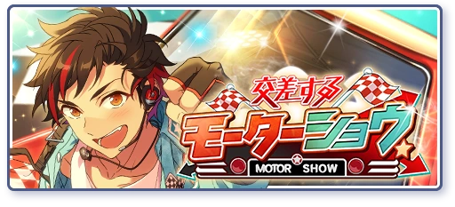

These are quick summaries and story recommendations on various AKARYUSEI topics! If there's something you want researched or answered, feel free to ask in my retrospring!
After Chiaki and Kanata graduate, RYUSEITAI splits into two divisions: RYUSEITAI-M (for Morisawa) and RYUSEITAI-N (for Nagumo). RYUSEITAI-M is the RYUSEITAI we're familiar with: Chiaki is the captain (RYUSEI Red), and the members are Kanata, Tetora, Midori and Shinobu. RYUSEITAI-N is made up of students from Yumenosaki: Tetora is the captain (RYUSEI Red), and the members are Midori, Shinobu and additional students.
RYUSEITAI-N struggles to survive because it has no return in investment. It's newly formed and doesn't have notable achievements. When they do have idol work, they don't meet client expectations: agencies that hire them expect the energy of RYUSEITAI-M, and feel cheated when they don't get it (Shinobu Idol Story 1). As captain, Tetora lowered the bar for entrance (Tetora Idol Story 1), so many members join for the fun reputation RYUSEITAI has (Motor Show). Because of this member bloat, lots of money goes into training them as recruits, so they're always broke. (Main Story)
Ultimately, they are dissolved following the events of Comet Show. RYUSEITAI-M returns to being the only RYUSEITAI. However, the old members of RST-N continue to make appearances in other stories, from joining the dark organization Crimson Productions(Supervillain) to bolstering Shinobu during the Student Council elections (ATLANTIS).
RELEVANT STORIES
Motor Show

Comet Show
Supervillain
Before attending Yumenosaki, Keito wanted to become a mangaka. Mizuhanome-sensei is the pen name Keito uses for his doujinshi. It’s Keito worst-kept secret, but he still attempts to keep it discreet for the sake of Akatsuki’s image (Philosopher's Guidance)
Some facts about Mizuhanome-sensei:
• In !-era, Keito draws posters for events around campus and keeps up his manga as a hobby. He has an eye for graphic design and data visualization (Philosopher’s Guidance). He’s more familiar with traditional art than digital. (Philosopher’s Guidance, Scroll of the Elements).
• Anzu is his biggest fan, constantly letting his secret slip out to others. Her art style resembles Keito’s (Tea Party).
• One known work of his is "Wonderland Alice VS. Looking Glass Alice". It's unfinished, so Eichi entrusts Anzu to finish drawing the rest (Tea Party). Mizuhanome has also written text-only fanfiction for a discontinued series (Biblio) and has a fanart book (Mission of the Spy).
RELEVANT STORIES
Tea Party
Philosopher's Guidance
Comic World
Quarrel Festival
Scroll of the Elements
Mission of the Spy
In his first weeks at Yumenosaki, Shinobu aims to start the Ninja Association. After Shinobu meets Chiaki and joins RYUSEITAI, Chiaki encourages him to take the steps to make it happen (Sparkly First Years). Amidst other students wanting to form clubs, Shinobu was lost in the crowd. Mao noticed him, called out to him, and after hearing out what he wanted to do, explained how they could make it possible (Tanabata Festival).
Shinobu has created several promotional materials: he films a video with Midori displaying different jutsu (Chuunibyou). The joint-live [Scroll of the Elements] was a organized to be in affiliation with Ninja Association to create a track record of notable club activities (Scroll of the Elements).
In Ninja Clan, the Ninja Association is at risk of disbandment. Shinobu and RYUSEITAI put on a live show to advertise to members, and ultimately, Mayoi Ayase joins the club. They run jobs for other people using a request box to continue establishing track record (Dead End Land)